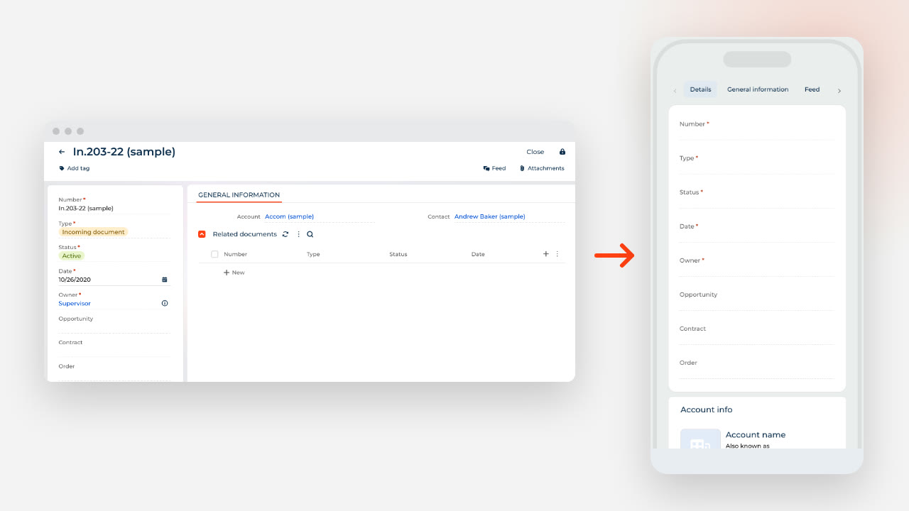
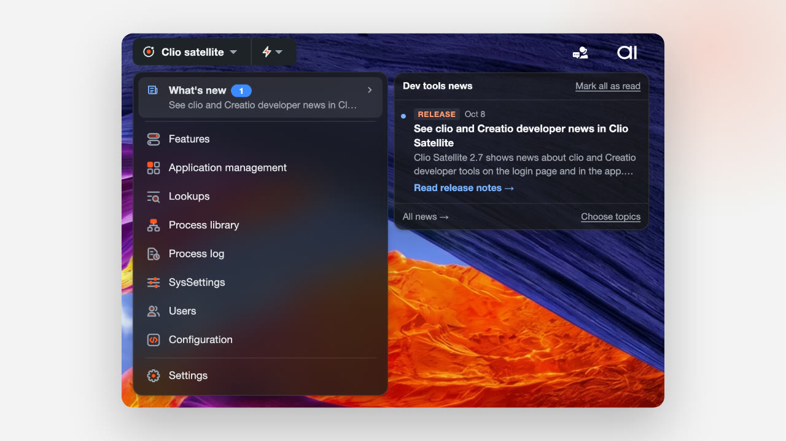

Turn Freedom UI web pages into mobile pages with clio
An AI agent connected to clio version 8.1.0.137 turns a Freedom UI web page into a mobile page with its fields, data bindings and captions.

Read release notesFor Development
Releases, tips and events for clio, Clio Satellite and the tools that help you build on Creatio.
An AI agent connected to clio version 8.1.0.137 turns a Freedom UI web page into a mobile page with its fields, data bindings and captions.

Clio Satellite 2.7 shows news about clio and Creatio developer tools on the login page and in the app. Turn it on in extension options.
